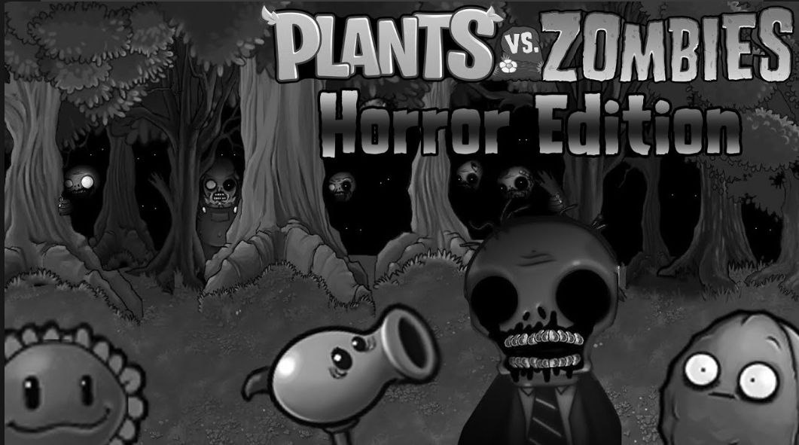

Horror mod
Plants vs. Zombies Horror - это модификация оригинальной игры Plants vs. Zombies, разработанная китайским игроком Nostalgic
-
Внешность зомби получила
больше интересных изменений, теперь они
еще больше похожи на живых мертвецов. У
многих из них совсем отсутствуют глаза, у
всех на телах есть многочисленные раны, а
рты вымазаны кровью. Практически все
получили значительные внешние изменения,
сильно отличающиеся от оригинальной
версии. Кроме прочего, были изменены
многие описания зомби в альманахе, что
говорит о том, что модификация имеет
собственный лор. Таким образом, зомби
наездник не только заражает животных, но и
использует их для своих кровавых
потребностей. Зомби на тарзанке, не
испытывает боли и используют собственный
кишечник в качестве шнура.

Мод предлагает новый и сложный игровой процесс как для новичков, так и для опытных игроков.
Нажмите на кнопку с телеграмом чтобы скачать Horror Мод